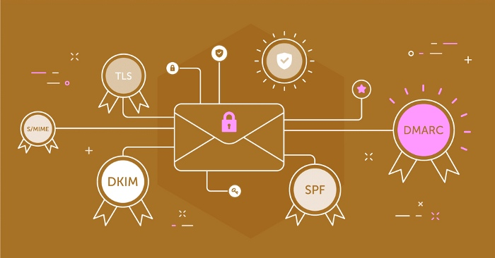

- Create a DMARC Record. Using DMARC Setup Tool, which will help you easily create the required TXT record. It should be similar to this sample: V=DMARC1; p none; rua mailto:
- In your DNS settings, follow these DMARC setup steps to create a DNS TXT record. Log into the management console of your DNS hosting service provider, and while this can differ by provider, you need to locate the place where you can add a DNS TXT record.
- In the Type box, select TXT Recordset Type.
- In the Host Value box, enter DMARC as the host.
- In the TXT Value box, enter the record you created using the DMARC Record Creator.
- Save the DMARC record.
- Validate the DMARC setup. You can use the DMARC Setup Tool to verify whether the DMARC setup is correct.
- For large organizations, it is recommended to begin with a simple monitoring-mode TXT record when setting up DMARC on several domains. A monitoring-mode TXT record has a policy set to none. Some companies favor publishing a DMARC TXT as part of their DMARC records because they hesitate that they might lose a lot more email by publishing a more restrictive DMARC policy, and this allows them to observe the effects of the change before making the expectation that.
- Include SPF and DKIM in your plans. Keep in Mind that DMARC won't permit you to reject email unless you implement the SPF and DKIM standards on all authorized sources. Your DMARC reports will comb through all the services that send you an email from your domain. Once you have successfully implemented SPF and DKIM on legitimate mail sources, your DMARC reports will filter out any suspect messages as they won't be matched against the SPF and DKIM policy.
- Request the outside mail systems quarantine any mail that doesn't implement DMARC when you believe that the bulk of your legitimate traffic is protected by SPF and DKIM, and you understand the impact of DMARC deployment. By sending this message to DMARC receivers, you are asking for them to contribute to the local equivalent of spam folder messages that don't meet DMARC's criteria.
- As you feel confident that your legitimate mail is authenticated, the last step is implementing an accept policy. When you incorporate this at topmost importance, you're asking email receivers not to receive mail that fails prior DMARC checks. It's the last and most dependable method to secure your domain, as it excludes any illegitimate email from reaching your patrons.
Email Security With DMARC Office 365 Feature:
100% Deliverability!
100% Deliverability!
If you're using Office 365, you should be using DMARC to improve your experience. DMARC is a Domain-based Message Authentication, Reporting, and Conformance protocol that helps to improve the security and deliverability of email messages.
By using DMARC, you can help to ensure that your email messages are properly authenticated and delivered to the intended recipient. Additionally, DMARC can help to improve the deliverability of your email messages by providing feedback to Office 365 about the authenticity of your messages.
DMARC is intended to prevent an incorrect email address or mailing domain. It is a standard that uses the SPF and DKIM policy control layers to help email receivers identify when an email hasn't been authorized by the sender of the From: header.

How To Set Up Dmarc For Office 365
Employ Best Practices When Deploying DMARC for Office 365
A phased deployment is a better way to handle the DMARC protocol in large companies with many different domain names spanning divisions, departments, and third parties. Email security experts uses the most efficient tactics for using this method, such as:
In summary, the DMARC records for your domain are authoritative and will be used for all messages sent from your domain. If you are using Office 365, it is advised to read up on the various features and plan your implementation accordingly. The DMARC records have to be implemented correctly and should be in place before your domain starts sending out any messages using Office 365.